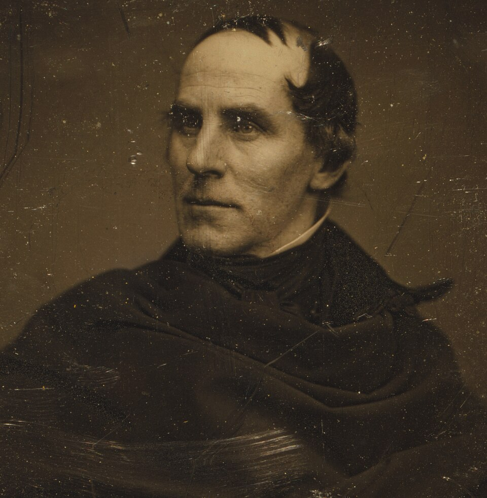

Pintor angloamericano
Thomas Cole
1801–1848
Thomas Cole nació el 1 de febrero de 1801 en Bolton, Lancashire, y emigró con su familia a Estados Unidos en 1818 12. Fue retratista itinerante en Filadelfia, Ohio y Pittsburgh 2. Se le atribuye el arranque de la Escuela del Río Hudson, primer gran movimiento artístico estadounidense 12. Viajó por Europa entre 1829 y 1832 3. Para el comerciante Luman Reed pintó en 1835–1836 «El curso del imperio», y en 1839–1840 «El viaje de la vida»: ciclos alegóricos donde el paisaje sigue siendo protagonista 13. Denunció el daño de la industria y el ferrocarril a los Catskill 2. Murió de pleuresía en Catskill (Nueva York) el 11 de febrero de 1848 1.